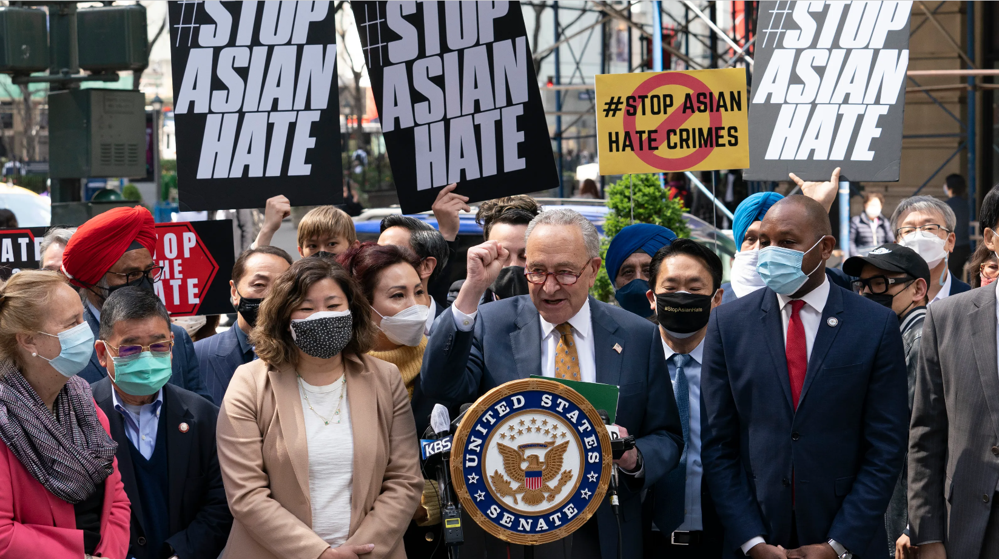

Our cause matters because the way the media perceives and spreads information about groups can affect how the general public views and interacts with groups in a negative way. This may be a result of the misrepresentation or false information being spread about a group through the media, which is a problem because it can lead to conflict and violence as well as certain groups being discriminated against. The media creates a divide between groups, polarizing people and how they view each other. Our everyday lives and the interactions we have with others is heavily influenced by the media so it is crucial that all groups and individuals are represented fairly and truthfully.
Portfolio

About
On June 12, 2016, a mass tragedy occurred at the Pulse nightclub in Florida. A man born in America with parents who emigrated from Afghanistan carried out an attack that ended the lives of 49 people and injured 53 others. The attack was carried out against members of the LGBTQIA+ community but was then overlooked by theories of the attacker being linked to ISIS. No evidence was found that there was ever a link but the media ran with the idea and many members of the public believed this to be true. Rather than focusing on figuring out a motive, many assumed due to the attacker's ethnicity that he was linked to terrorist groups. This is only one of many examples of this occurring due to the media presenting events or issues without fully fact-checking their information. Which can lead to the public making assumptions about people based on multiple accounts of misinformation.
Another example of this occurring is the September 11th terrorist attacks. According to the FBI’s uniform crime reporting program “Anti-Islamic religion incidents were previously the second least reported, but in 2001, they became the second highest reported among religious-bias incidents… growing by more than 1,600 percent over the 2000 volume”. Although it was reported upon many did not focus on 9-11 being done by a terrorist group the focus/blame was on a specific religion. The religion was focused on open as a result of 9-11 causing hate crimes to spike as stated by the FBI’s uniformed crime report but, it was also has caused other terrorist attacks to be linked to the Islamic religion even without evidence of any connection. This can be seen 15 years later in the 2016 pulse nightclub shooting. This can demonstrate the importance of the media sharing the correct information with all facts included at once. As one negative link to a group can cause permanent damage to the group of people’s reputation in the public eye and lead to misinformation that can be seen as facts down the road.
During the year 2020 during the COVID-19 pandemic the former president of the United States, Donald Trump, repeatedly referred to the virus as the “chinese virus” or the “kung-flu” these negative comments helped to result in many violent hate crimes against those in the Asain community. The media ran with the fact the virus originated in WuHan China, this piece of media helped to aid people like Trump to blame those in one community. This blame led to the misconception that China or other countries in Asia purposefully caused the virus. It can be seen that the media linking a group through events or even stereotypes such as that Islam is a violent religion causes many in the hegemonic group to negatively view people in those groups as well as potentially act upon those views.
Entertainment media does a similar effect when not seen as satire. An example of this while not involving race is the south park episode about redheads which had discussions that became popular on social media sites such as youtube. An effect of this episode was that many people with red hair were bullied and said to not have souls. A viral video was made about this episode of a kid explaining his bullying situation due to the episode. South park is meant to be satire but can be interpreted in a non-satirical, mean-spirited way. This demonstrates how easily influenced people are by the media from topics spreading out from hair color to politics to race.
To state this clearly, the media whether it is news or purely for entertainment places stereotypes and spreads misinformation that has an effect on minority groups as these statements make their way into the general public’s lives. Which can lead to negative and dangerous outcomes that impact minority groups.
Learn More
Contact Alicia Carnell for more infomation on misinformation on tragedies that are caused by this issue and organizations helping to create a change in media representation.
Contact Richard Colon for more information on post-9/11 Islamophobia and how it persists today.
Contact first name and last name for more infomation on x
Contact first name and last name for more infomation on x
Contact first name and last name for more infomation on x
Contact first name and last name for more infomation on x
Contact first name and last name for more infomation on x
Contact first name and last name for more infomation on x
Contact first name and last name for more infomation on x
Contact first name and last name for more infomation on x
Anti-Asian hate crimes rose in August 2020 which led to protests such as that pictured above. The verbal and physical attacks caused them to feel unwanted and unsafe in public places. As stated in COVID-19 Anti-Asian Racism and Race-Based Stress: A Phenomenological Qualitative Media Analysis there were more than 9,000 incidents that have happened or been reported since the beginning of the pandemic. Another thing stated was a physical incident that happened, where a man assaulted an Asian woman in New York on the subway. The man was “convinced” that she was infected with covid 19 and called her “diseased” and was cursing at her. He proceeded to kick and punch her in front of others. Another thing that has occurred is an increase in bullying in the classroom around the country. Asians have suffered from an increase in bullying since the pandemic began. This is the impact of the covid-19 news reports making an emphasis on Covid-19 being from China. Specifically, the reports blame Asian people as a whole.
Donald Trump on Muslims (C-SPAN)
Before watching the video, the content warning includes Islamophobia. Post-9/11 America can be an unfriendly and judgemental place for Arab Americans and Muslims all across the country. Nationwide Islamophobia was spread in wake of the September 11 attacks from domestic media that still persists today. One popular news outlet that still consistently spreads misinformation about Muslims is Fox News. Ex-host Jeanine Pirro was quoted on January 10th, 2015 on a nationwide broadcast saying: “We need to kill them. We need to kill them… Our job is to arm those Muslims to the teeth, give them everything they need to take out these Islamic fanatics, let them do the job, and when they do, we need to simply look the other way,”. Hate speech being spoken on a household-trusted news station makes Islamophobia seem okay for the general public to participate in, increasing inexcusable hate of the entire religion. Another example of blatant Islamophobia spread through the media is hate speech from former president Donald Trump. In the video above, taken at one of his 2015 presidential campaign rallies, Mr. Trump calls for a full banning of Muslims from entering the country. His statement was met with applause and cheering. Racism and xenophobia are baked into this country, with the media and its hateful messages only persisting and worsening them. Hate towards a group of people being mainstream further divides the nation, removing groups from our universe of obligation, alienating us from each other.
Stereotypes in the media are misrepresenting poverty and minority groups suggesting that they are lazy and don’t work as hard as the majority. “Americans substantially exaggerate the degree to which blacks compose the poor. Furthermore, white Americans with the most exaggerated misunderstandings of the racial composition of the poor are the most likely to oppose welfare”(page 3). Many people have the opinion, which some segments of the media encourage, that most whites blame welfare recipients for their situation, and are less likely to support welfare than those with more accurate perceptions of poverty. Essentially, media and popular opinion intertwine to misrepresent poverty within the minority class.
Title of Image 4
This is where you will say something about the image. Try to have these six containers provide a mix of calls to action and literature to support your cause. For instance, if you can find a local organization to call/volunteer/donate/etc., you may want to put their information in one of these containers. Likewise, your image may be a phone. The title of this image may be their organization. In the space where this is all typed, you will talk about them. If they are an organization, you may include their mission statement or their spokesperson or representative image. If it is literature, be sure to include significant evidence here. You may want to pull a quote (if you do, include in-text citation) and you may want to pull a photo of scholar/speaker from the internet. Make sure it is covered under your license, especially if you have made your website public.
Title of Image 5
This is where you will say something about the image. Try to have these six containers provide a mix of calls to action and literature to support your cause. For instance, if you can find a local organization to call/volunteer/donate/etc., you may want to put their information in one of these containers. Likewise, your image may be a phone. The title of this image may be their organization. In the space where this is all typed, you will talk about them. If they are an organization, you may include their mission statement or their spokesperson or representative image. If it is literature, be sure to include significant evidence here. You may want to pull a quote (if you do, include in-text citation) and you may want to pull a photo of scholar/speaker from the internet. Make sure it is covered under your license, especially if you have made your website public..
Title of Image 6
This is where you will say something about the image. Try to have these six containers provide a mix of calls to action and literature to support your cause. For instance, if you can find a local organization to call/volunteer/donate/etc., you may want to put their information in one of these containers. Likewise, your image may be a phone. The title of this image may be their organization. In the space where this is all typed, you will talk about them. If they are an organization, you may include their mission statement or their spokesperson or representative image. If it is literature, be sure to include significant evidence here. You may want to pull a quote (if you do, include in-text citation) and you may want to pull a photo of scholar/speaker from the internet. Make sure it is covered under your license, especially if you have made your website public.